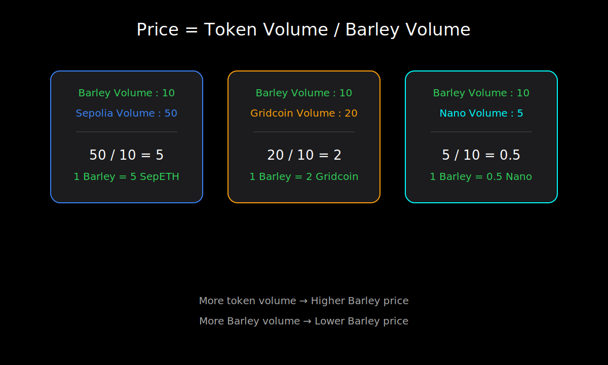

I had two options. Panic… or decide.
So instead of losing my mind, I made decisions.
Decisions that would simplify my life.


There’s a strange moment in every project.
The moment when it stops being an idea… and starts becoming something alive.
On February 1st, I announced a deadline: March 1st. The beta version of Barley would be live.
Today is February 15th. 50% of the time has already passed.
And somewhere between enthusiasm and doubt, Barley has taken root.
The first week was noise. Messages. Calls. Conversations.
I told friends in person, online… even in places where maybe you’re not supposed to pitch a blockchain idea.
Everyone was supportive. Encouraging. And that’s when I realized something ...
Applause feels like progress. But i know it isn’t.
There’s a reason people say: "keep your goals to yourself."
When you announce a project publicly, your brain can release a small dose of satisfaction — almost as if the work had already been done.
If you’re curious about the psychology behind this idea, Derek Sivers explains it brilliantly in his talk: Keep your goals to yourself.
But what fascinated me even more is something I studied back in 2023 while diving into neuroscience and dopamine. It involves rats 🐁.
In a study published in Frontiers in Behavioral Neuroscience: A Novel Weight Lifting Task for Investigating Effort and Persistence in Rats, Researchers designed a simple but powerful experiment.
If you don’t have an hour and a half to read the full paper, here’s the part that matters for me:
The first week after announcing Barley, I realized something uncomfortable.
Applause wouldn’t take me anywhere.
So this time, I decided to work before seeking the reward.
If I let myself enjoy it too much, I would slowly become Group B.
Reward before effort. And I refuse to peak in week one.
...
Then reality arrived. Not softly.
Every morning I opened my notes, and the list had grown.
At one point I even thought about remixing Jay-Z’s “99 Problems.” song.
Because at that stage, I definitely had a few.
There’s an old joke about a math book that committed suicide because it had too many problems.
For the first time, I understood the book.
The questions weren’t abstract anymore. They were architectural.
And somewhere between JavaScript tutorials, protocol diagrams, and pushing code that wasn’t ready…
I asked myself something brutally simple:
How the hell am I going to ship this by March 1st?

I had two options. Panic… or decide.
So instead of losing my mind, I made decisions.
Decisions that would simplify my life.
I removed the backend.
Yes! A blockchain project… without a backend.
If that sounds hilarious, that’s because it is. At least from a traditional perspective.
But this isn’t a venture-funded startup. It’s a beta. An experiment.
A controlled sandbox where the goal isn’t perfection — it’s learning.
I realized something simple: I don’t need to solve every problem on day one.
I need something that works. Public. Transparent. Simple.
So Barley’s first version will live entirely on the front end. Readable pages. Linked blocks. A visible ledger.
No heavy architecture. No invisible machinery. Just structure.
In a way, this first version is almost Web 1.0.
- Static.
- Readable.
- Minimal interaction.
Then will come Web 2.0 — real user interaction. Smoother mechanics.
And eventually, with E-Buny at the end of the year, Web 3.0.
Progressive evolution. Not jumping to the future before earning it.
But removing the backend created another problem : If there’s no backend…
- how do users communicate?
- How do transactions happen?
- How do validations get recorded?
A blockchain without coordination is just a static page.
We’re building a small private server on Matrix.
Only ten people. Bots configured. Simple automation.
It’s not decentralized perfection. It’s controlled experimentation.
And honestly... It’s also an excuse to learn Matrix properly.
March 1st isn’t only about Barley. Other platforms are shifting too.
Some of them in ways I don’t fully agree with (Discord).
I’d rather adapt now than complain later.

Instead of launching with ten users at once, we’ll start with two.
Yes ! Two people. Then two more the following week. And two more after that. Growth in layers.

I promised a launch date. I never promised perfection.
Reducing the number of moving pieces reduces the number of ways things can break.
And suddenly… the pressure felt manageable.
After all, as the old strategy says: “Divide and conquer.”
If Barley was going to be alive, it needed circulation.
Not hype, Not speculation. Structure.
As I defined from scratch : Over ten weeks, 100 Barleys will be created.
That’s it. No hidden minting. No surprise supply.
But even that comes with a constraint.
After week four, I won’t be allowed to benefit from reward distributions.
If this is an experiment, it has to be fair. No shortcuts. No silent advantages.
Then I did something even more experimental.
I made Barley tradable.
Not with promises. With real tokens.
I put 75% of my own peny coins tokens into the system.
No complicated tokenomics. No artificial scarcity. Just math.
The price depends on the ratio inside the pool.
If there are 10 Sepolia ETH and 10 Barleys, then 1 Barley = 1 SepETH.
If Barleys increase, each one becomes cheaper.
If SepETH increases, Barley becomes more expensive.
Supply. Demand. That’s it.
The sell price is 90% of the buy price. Not to extract value — but to stop easy looping and farming.
This isn’t about building a perfect market. It’s about watching what happens when something experimental becomes tradable.
At some point, I had to remind myself of something obvious: This is a beta.
It doesn’t need to solve double spending on day one.
It doesn’t need a peer-to-peer protocol immediately.
It doesn’t need a 40-page whitepaper.
It only needs to work.
Nothing more !
That’s when I remembered a principle I’ve always respected when things get hard : KISS — Keep It Simple and Stupid.
And strangely enough… it reminded me of a rocket engine.
Yes. A rocket engine.
You might be wondering: What da heck does a Raptor engine have to do with a blockchain experiment?
Stay with me.

Between 2019 and 2024, the evolution of SpaceX’s Raptor Engine is a masterclass in innovation.
It went from something visually overwhelming to something radically simplified.
From the complexity of Raptor 1 to the simplicity of Raptor 3, it’s proof that less is more.
The transformation shows the power of simplification and optimization.
Fewer parts. Cleaner design. Less visible chaos.
Fewer parts mean fewer failure points, lower costs, and faster production.
As Elon Musk puts it, “The best component is no component.”
This isn’t just about rockets : Removing unnecessary complexity in anything we build can be as impactful as adding new technology.
A powerful reminder: simplify, optimize, and innovate!


"This photograph of SpaceX’s Raptor rocket engine evolution is a powerful reminder of what’s possible when optimization and efficiency are prioritized. Just as SpaceX reimagined propulsion systems to achieve greater performance and reliability, businesses—especially IT teams—must refine their operations to create lean, technically integrated, cost-efficient systems that deliver maximum value.
This will be next year's call to arms for technology providers. Helping clients succeed means assisting them in meeting this challenge.
I'll also add that some organizations have gone in the opposite direction, creating overly complex, wasteful, inefficient systems (like a Rube Goldberg machine). This transformation from SpaceX's Raptor 1 to Raptor 3 illustrates the profound power of simplicity, emphasizing the importance of subtracting the obvious and adding the meaningful.
In the realm of engineering, complexity is often seen as a mark of sophistication. Simple can be harder than complex; it requires effort to achieve clarity and simplicity in thinking. This serves as a great inspiration for the software industry to ensure we don’t accumulate what doesn't contribute to meaningful product goals."
@Mark Edwards

And this isn’t just about rockets.
Removing unnecessary complexity in anything we build can be more powerful than adding new features.
Simplify. Optimize. Then innovate.
That’s the philosophy Barley needed.
This week wasn’t about adding more.
It was about removing.
Barley doesn’t need to be perfect on March 1st.
It just needs to exist.
Alive. Simple. Understandable.
One hundred Barleys over ten weeks.
A reward system tied to effort.
A faucet flowing progressively.
A small, controlled group growing in layers.
No illusion of scale. No artificial sophistication.
Just learning by building.

Before closing, I want to give a quiet shoutout to the creator of a project called CONTRAST.
He’s working on simplifying complex blockchain mechanics in a way that deeply resonates with this philosophy.
If you're curious about ledgers, peer-to-peer protocols, and what actually happens under the hood, I recommend exploring his GitHub Repository.
Go say hello from me 😎.
Barley has taken root. Now let’s see how it grows.
See you on March 1st 😜.